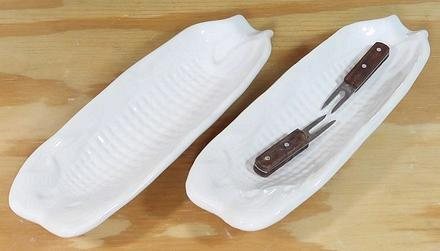

Corn Dish & Corn Horns

Corn dishes greatly enhance the experience of eating Corn On The Cob. Butter,
or other potions poured on the cob, collect in the dish and rolling the
cob in them re-coats the corn, reducing messiness and waste.
Caution: Some Asian sets are way too short for American
Sweet Corn. They are sized for the Waxy Corn very popular in Asia, but only
available frozen in Asia markets here in North America. A corn dish for our
corn should be at least 8-1/2 inches long, as are the photo examples.
More on Euro-American Serving Pieces
sv_corndz 220210 ©Andrew Grygus - agryg@aaxnet.com
- Linking to and non-commercial use permitted
All images not otherwise attributed are ©
cg1.